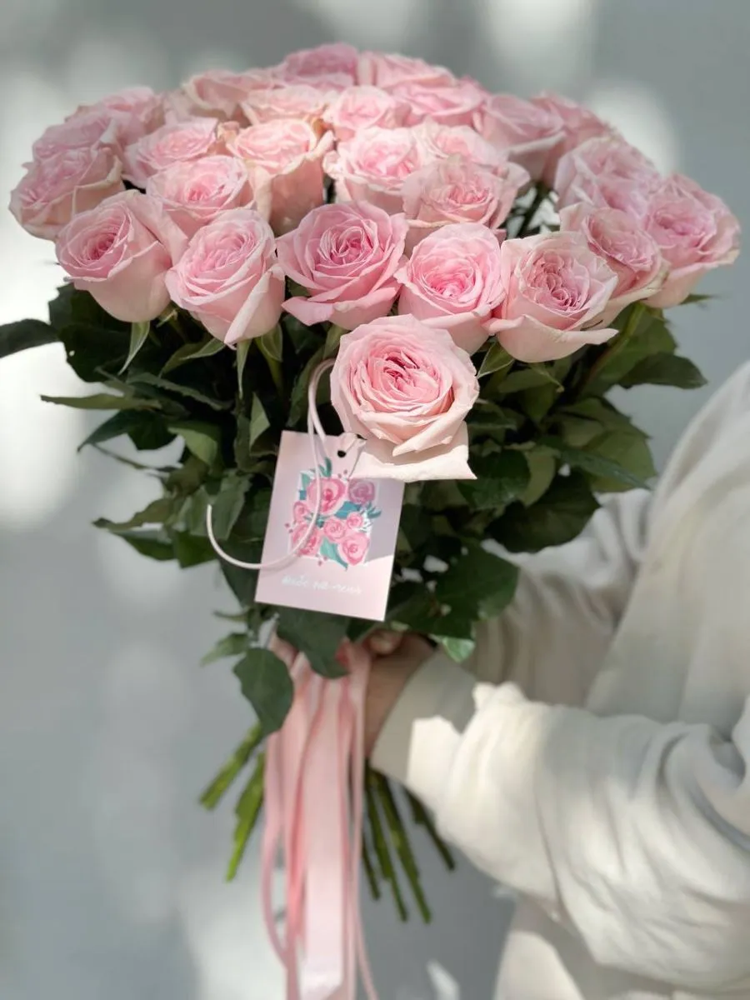

Роза — королева цветов, символ любви, красоты и страсти. Это самый популярный и узнаваемый цветок в мире, который дарят на самые важные события в жизни.
Розы известны человечеству уже более 5000 лет. Впервые их начали выращивать в Древнем Риме и Древней Греции, где они были посвящены богине любви Афродите. Сегодня существует более 300 видов роз и тысячи сортов — от миниатюрных кустовых до крупных чайно-гибридных. Лепестки роз могут быть самой разнообразной окраски: красные, белые, розовые, жёлтые, оранжевые, сиреневые и даже зелёные. Аромат розы считается одним из самых изысканных и широко используется в парфюмерии. Розы не только красивы, но и полезны — из их лепестков делают варенье, масло и розовую воду. В букетах розы сохраняют свежесть до двух недель при правильном уходе.